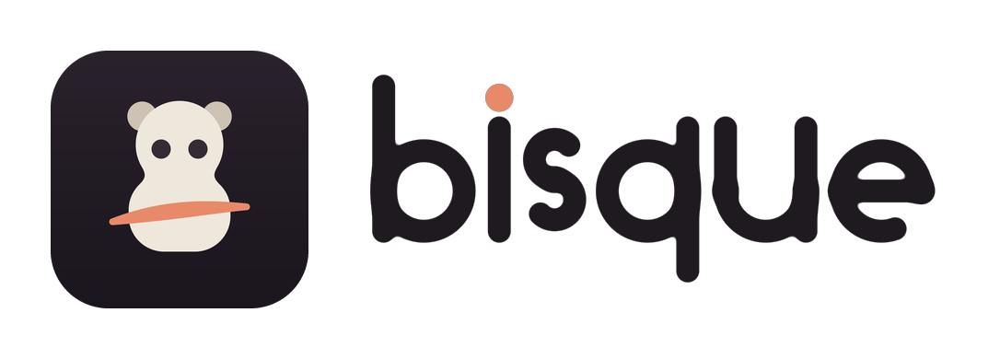

Bisque privacy
Bisque is an offline creative toy. We do not collect your artwork, personal information or usage analytics. There are no accounts, ads or third-party analytics SDKs.
What stays on your device
Bisque saves the current painted surface, material texture, clothes, selected tools, orientation, colour history and the generated creature’s seed and original day in its app storage. The random seed creates the creature; it is not a device identifier. Undo keeps up to three recent artwork changes during a session and can be cleared when the device needs memory.
The optional Apple Watch connection
If you use Bisque on an iPhone with a paired Apple Watch, Apple’s WatchConnectivity service transfers the creature’s random seed, original day, three mood values derived from the colours and a painting-progress value. The Watch keeps the latest received update so it can show a simple companion when the phone app is closed. Painted textures and clothes are not sent. None of this data is sent to a Bisque server.
No tracking or requested sensitive permissions
Bisque contains no advertising or analytics services. It does not request camera, microphone, location, contacts, photo-library, notification or tracking access. Its privacy manifest declares app-only UserDefaults storage. No personal information is requested by the app.
Saving, backups and deleting
There is no Bisque account, server backup or artwork sync between your iPhone and iPad. Your operating system may include app data in your own device backup according to your settings. Holding Start over clears the current paint and clothing but retains the creature and preferences; it is not a complete data-deletion command. Remove Bisque and its app data to delete the local artwork and preferences. Remove the Watch app and its data to remove the cached companion. Backups are managed separately in your Apple settings.
Links and support
Privacy and support links are available only after an adult maths challenge. They open the system browser. These public pages are hosted by GitHub Pages; visiting them involves ordinary web requests handled by the browser and hosting provider. If you email us, we receive the information you choose to send and use it to respond. Please do not include sensitive information about a child.
Contact
For privacy questions or a request about support correspondence, email hello@norea.studio.
Updated 7 September 2026.